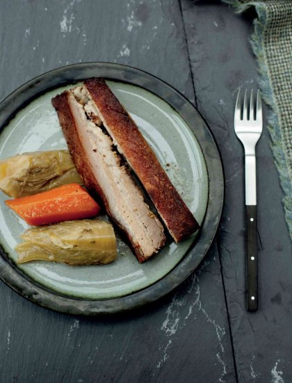

Pork belly braised with star anise and fennel seeds

This is a great dish to prepare in advance and serve up for a casual evening with friends. Pork belly is something people often love, but it can be disappointing if it’s not cooked correctly. You’ll need to start preparing this dish a day or two ahead, as the pork needs to be braised, pressed and chilled, but it’s well worth the wait – not least because the stock provides the basis for another meal (see below).
Heat the oven to 180°C. Season the pork belly all over with salt and pepper. Heat a heavy-based ovenproof cooking pot over a medium-high heat and add a little olive oil. Place the pork belly, skin side down, in the pot and sear for 3–4 minutes to brown, then turn and colour the other side for 3–4 minutes. Remove from the pan and set aside.
Add the carrots, onion and fennel to the pot and cook over a medium-low heat for 5 minutes. Add the star anise, fennel seeds, garlic and bouquet garni and sweat for a further 3–4 minutes.
Lay the pork belly on the vegetables, pour on the chicken stock, season with salt and bring to the boil. Put the lid on and transfer the pot to the oven. Cook for 2–2 ½ hours until the pork is tender.
Carefully lift the pork out of the pot and allow to cool. Drain the vegetables, reserving them and the liquor. Line a baking tray with cling film, place the pork on the tray and wrap in the cling film. Cover with another tray, then place a weight on top (a heavy chopping board is ideal). Place in the fridge and leave to compress for 24 hours. Refrigerate the vegetables and liquor too.
The next day, when ready to serve, heat the oven to 170°C. Unwrap the pork. Heat a non-stick ovenproof frying pan over a medium-high heat. Add a drizzle of olive oil and place the pork, skin side down, in the pan – take care, as the fat will spit. Fry for 4–5 minutes, then transfer to the oven. Cook for 12–15 minutes until crispy, turning the pork once or twice. Remove the fat from the reserved liquor. Reheat the vegetables in some of the liquor.
Slice the pork belly and serve with the vegetables, spooning a little of the hot liquor over them.